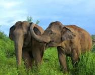
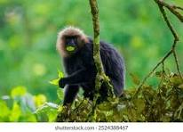

Wildlife of Kerala
Kerala is known for its rich biodiversity and dense forests that shelter numerous species of flora and fauna. The state has several wildlife sanctuaries and national parks that attract nature lovers and wildlife photographers from around the world.

Thekkady (Periyar Wildlife Sanctuary) is one of the most famous wildlife destinations in Kerala. It is home to elephants, tigers, bison, sambar deer, and a wide variety of birds. Boat safaris on Periyar Lake are a popular activity among tourists.

The Silent Valley National Park is another major wildlife region known for its untouched rainforest ecosystem. With its rich greenery and rare animal species, it offers a remarkable experience for adventure enthusiasts and researchers.